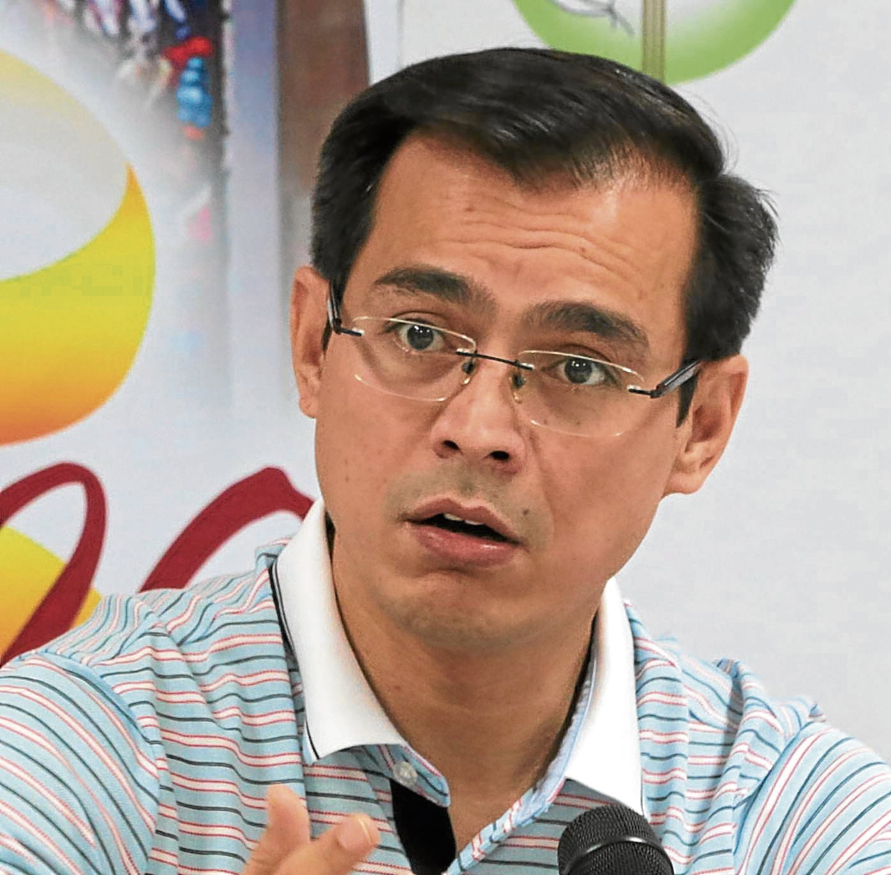

Isko Moreno
Francisco Moreno Domagoso | Mayor of Manila
General Information
- Was an actor/telivision personality
- Became a politician in 1998
- Ran as Vice Mayor of Manila in 2007-2016
- Became Mayor of Manila in 2019 elections
- Became 2022 presidential candidate under Aksyon Demokratiko (Aksyon)
History
- Started as a Councilor in 1998; re-elected in 2001 & 2004
- Got business administration degree from International Academy of Management and Economics in 2003
- Took a Local Legislation and Local Finance course in UP Diliman, public administration in University of the City of Manila, and leadership and governance courses in John F. Kennedy School of Government and Said Business School
- Ran as Vice Mayor of Manila in 2007, and was re-elected in 2010
- Joined Pwersa ng Masang Pilipino (PMP) and United Nationalist Alliance (UNA) in 2012, and was re-elected as Vice Mayor again in 2013
- Ran for senator in 2016 but lost
- Became Chairman of the Board and Chief Executive Officer of the North Luzon Railways Corporation in 2017 and Undersecretary for Luzon Affairs and Special Concerns in 2018
- Ran for Mayor of Manila in 2019-present and currently a 2022 presidential candidate with Willie Ong as vice presidential running mate
Gallery